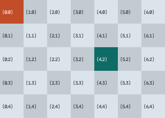
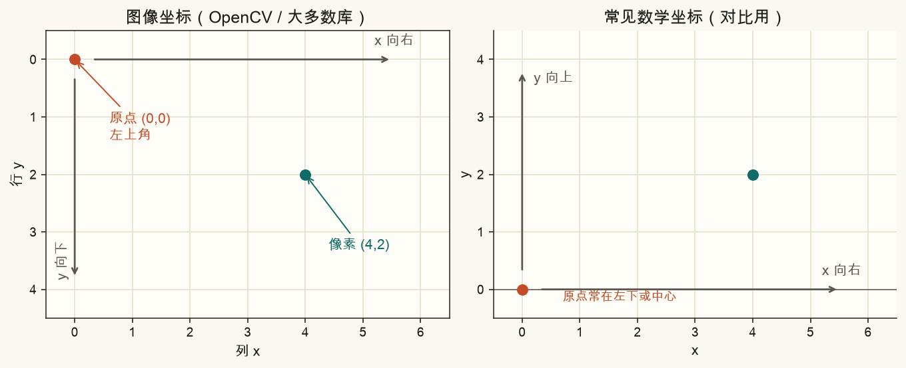
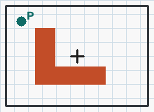
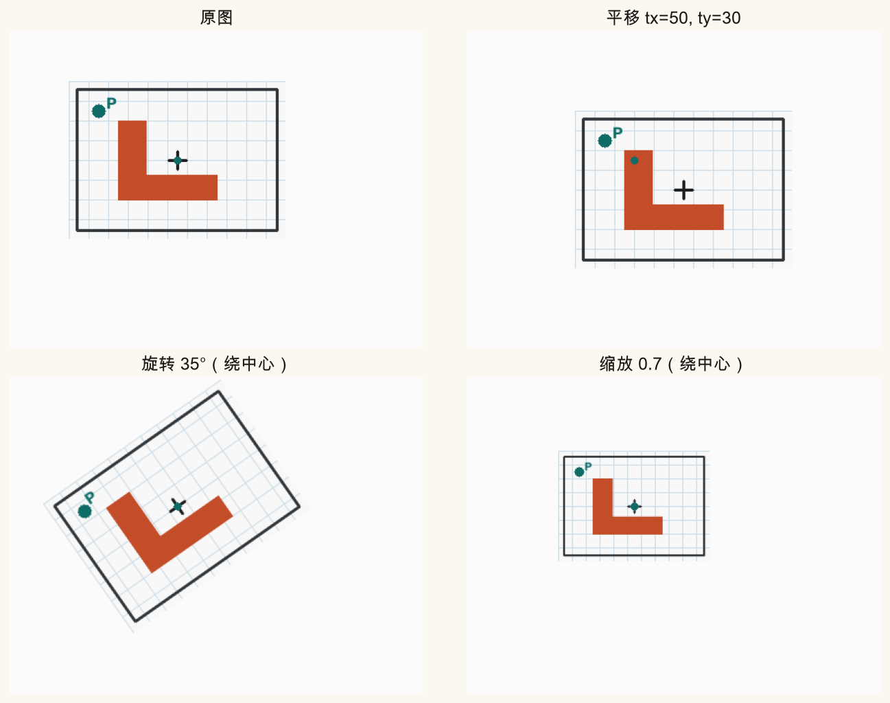
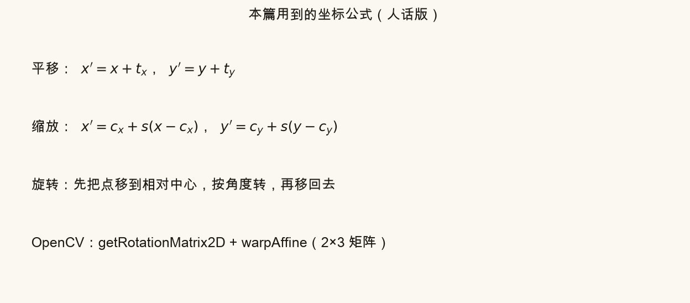
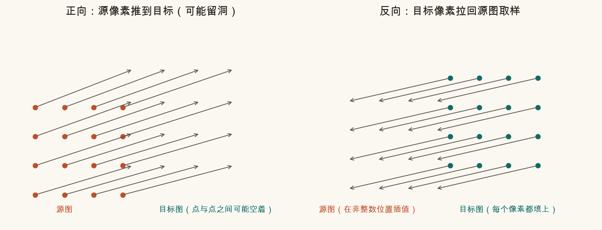

第 1 篇 · 坐标与变换 · 约 45 分钟
拼接要对齐，防抖要补偿，第一步都是：说清像素在哪，以及怎样把像素挪到新位置。这一篇约定坐标，亲手做平移、旋转、缩放，并建立「先改坐标，再重采样填像素」的直觉。
灰度图或彩色图，在内存里都是数组：每个格子存一个（或三个）数。格子的位置用两个整数描述——这就是像素坐标。
本系列约定写作 (x, y)：

(0,0)；青色格是 (4,2)——先数 x（列），再数 y（行）。OpenCV 里访问数组常用 img[y, x]，下标顺序是「行、列」，和坐标写法 (x, y) 正好对调，初学时最容易写反。口诀：坐标写 (x, y)，下标取 [y, x]。拼错一个，图就会「横竖颠倒地坏掉」。
中学平面几何里，y 常常朝上；屏幕和图像库里，y 常常朝下。同一句「向上平移 10 像素」，在图像坐标里对应 ty = -10。

旋转方向也要钉死：本系列与 OpenCV 一致——角度为正表示逆时针（在图像坐标下，看起来仍是逆时针）。第 2 篇引入矩阵时还会再写一遍。
先只动「形状不变」的几种变换。它们合起来有时叫相似变换；平移+旋转则是刚体变换。脚本里的卡片带一个橙色「L」和青色角点 P，方便看出转了哪边。

每个点加上同一个偏移：
x′ = x + tx， y′ = y + ty
整幅图像在桌布上被推了一下。拼两张图时，「先大致对齐」往往就是估一个平移。
先减掉中心，乘以倍数 s，再加回中心：
x′ = cx + s (x − cx)， y′ = cy + s (y − cy)
s > 1 放大，0 < s < 1 缩小。若不绕中心而绕原点缩放，图会往左上角「逃」。防抖里有时用轻微缩放，给裁切留余量。
把点看成相对中心的向量，转过角度 θ（弧度），再放回：
x′ = cx + cosθ · (x − cx) − sinθ · (y − cy)
y′ = cy + sinθ · (x − cx) + cosθ · (y − cy)
手持视频里，高频小角度旋转正是「抖」的常见成分。二维防抖经常估的就是每帧的 (tx, ty, θ)，有时再加一个 s。


cv2.getRotationMatrix2D 生成 2×3 矩阵，再用 cv2.warpAffine 真正改图像。公式给出的是「旧坐标 → 新坐标」。可图像是离散格子：新位置不一定落在整数像素上，也可能离开画布。
有两种思路：

warpAffine 走这条路。所以口头说「把图转 30°」，计算机实际做的是：对输出画布上每个像素，算出对应的源坐标，读颜色，写回去。拼接与防抖后面所有的 warp，都建立在这件小事上。
拖动平移、角度、缩放，看 L 怎么动。画布中心的青点是旋转/缩放中心；不会安装 Python 也能建立手感。
建议顺序：先只动 tx/ty；再只动角度，确认 L 绕青点转；最后拧缩放。把 θ 调到 0、s 调到 1，应回到「只平移」。
核心几行（绕中心转再平移）：
import cv2
M = cv2.getRotationMatrix2D((cx, cy), angle_deg, scale)
M[0, 2] += tx
M[1, 2] += ty
out = cv2.warpAffine(image, M, (width, height))getRotationMatrix2D 得到 2×3 矩阵：左边 2×2 管旋转和缩放，最后一列管平移。第 2 篇会把它放进「齐次坐标」里，和仿射、透视排成一家人。
进入本文件夹（已按第 0 篇建好虚拟环境的话先 source .venv/bin/activate）：
python code/ch01_coords.py成功后终端有「自检通过」，并写出：
ch01_axes.png、ch01_trs.png、ch01_resample.png、ch01_formulas.png：课文对照图assets/images/ch01_grid.png、ch01_card.png：网格与卡片ch01_my_transform.png：只跟随顶部「改这里」打开 code/ch01_coords.py，只改顶部四个数。
TX=0, TY=0, ANGLE_DEG=0, SCALE=1.0，运行后右图应与左图几乎一样。ANGLE_DEG=90。L 的长边朝向应转过四分之一圈；角点 P 绕中心走到新位置。SCALE=0.5 且角度为 0，卡片应缩到大约一半，中心大致不动。TY 改成负数（如 -40）。在图像坐标里这是向上移——对照图 1-2 想一遍。先自己答，再展开。
第 3 列、第 5 行（x=3, y=5）。读取写作 img[5, 3]（以及彩色时的通道维）。
取负：y 向下为正，向上移动就是 y 减小，ty = −12。
正向容易在目标图留下空洞或重叠；反向保证每个目标像素都去源图取一次样（再插值），输出更完整、更好实现。
不会。中心到自己的向量是 0，转完还是 0，加回中心后仍在原地。
平移、旋转、缩放还拼不出「近大远小」的梯形。下一篇引入仿射与透视，并用齐次坐标把平移写进矩阵乘法。